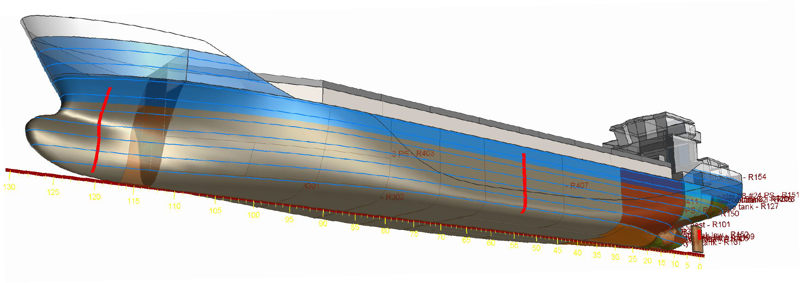
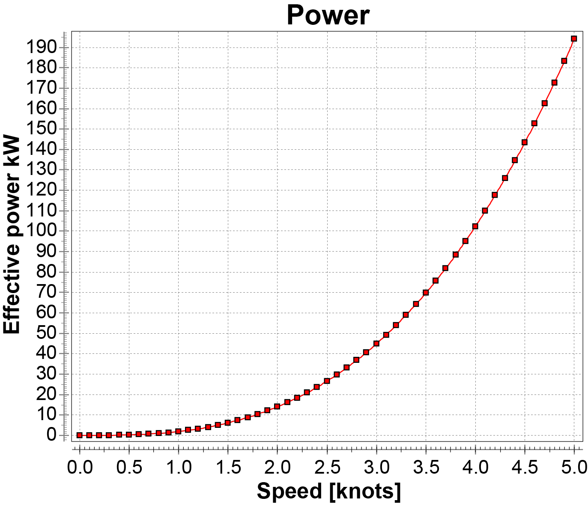

I apologize for being slightly late with this installment, but I found the results this week incredible—as in, “I am not sure I believe this result”. I’m still not 100% sure, frankly. I subscribe to the adage, “If it sounds too good to be true, it probably isn’t!” So, I wanted to be more sure of the numbers before I ended up with egg on my face. Now, after sleeping on it and visualizing the result, I think I believe them.
One of the assumptions in this possible solution is the idea of transporting a supertanker load (400 acre-feet, or about 500,000 tons) of water in a sailing vessel from the equator (where it’s collected) to the coast of Western Australia (where it’s used). Indeed, we know how to make sailboats: Basic engineering parameters for sailboat construction were established before engineering became a profession.
So what amount of propulsion energy will our shuttle system require? Let’s assume that the velocity will get the boat from the center of the collection zone to the water dock in 15 days as the crow flies, with the specification of on-time, monthly deliveries. If the boat is stuck in a windless area or needs to take a longer route, it gives room for error.
It’s about 1,800 nautical miles from the collection zone to the water port, so that’s 120 nautical miles per day, or 5 knots on average. Supertankers travel about three times faster than that, but they have a crew, an expensive asset that leads many supply chains, and one that’s environmentally toxic. In this hypothetical, the boats are crewless, and spills or leaks are inconsequential, so the ship must be mechanically robust. Think of it as a large aluminum rowboat. Moving at that speed with that cargo, safety will be baked in, so I believe it can be constructed cheaply.
The question is, for such a beast, how large a sail would be needed to propel a boat that size at that velocity? I’m starting with the concept of a cargo ship that can be fully loaded with rainwater over the equatorial ocean (my current thought is that collection and shipment will happen in separate vessels so that a more extensive collection area can be maintained without resorting to a funnel). Because of its inexpensive cargo and snail’s pace, this ship is managed remotely and autonomously for the most part—delivery isn’t particularly time-sensitive. It is driven by wind power, with sails that are actuated through modern telecommunication. This is not fanciful: Sail-enhanced supertankers are being deployed today, and autonomous remote-controlled sailboats are already at sea. 1
I’m not a naval engineer by any stretch of the imagination, but I can fake it with the appropriate software. I downloaded a free version of DelftShip , a software modeling package for ships of all shapes and sizes. As part of the package, it includes a detailed model of a cargo ship:

All I needed to do was to scale this ship to the volume of 400 acre-feet and ask the program to calculate the power required to move the vessel at 5 knots. Here’s the result:

It makes sense to anyone who’s spent time in or on the water that the faster you try to go, the harder it is to speed up. It also makes sense that it can take a long time to slow down to a dead stop once the ship is in motion. The resistance of the water at very slow speeds is minimal, and the curve reflects that. So, 200 kW can move this boat fast enough. Unit conversion time! 200 kW is…just under 300 HP. Wait, can that be right? Could we use a large outboard motor to move this behemoth?
I’ve checked and rechecked this factoid and cannot find an error. The boat shape is fixed, and the calculations are presumably done according to the best boat engineering practices. The ship is ginormous, 385 m long and 69 m wide ( a little under two football fields in the deck area, consistent with a supertanker). However, because of the limited resistance of water at slow speeds, it can be moved at relatively low power. (Consider the strongman stunt of pulling a semitrailer truck on a level surface with just a rope—all that’s needed is to overcome inertia and relatively small rolling resistance, and the truck will move, albeit slowly).
Now, what size sail is needed to generate 300 HP? It turns out that there is a convenient rule of thumb: A sail generates roughly 2 HP per square foot of area. So, to move this boat, we’d need 150 square feet of sail. That’s not a lot. Indeed, the sail-enhanced supertankers have four sails of 3,000 square feet each, so a single sail will be more than adequate to power the entire journey! The total HP of such a sail is roughly equivalent to a high-powered tugboat.
That’s another idea stopper avoided, I think. As always, dissent is encouraged! Intelligent and constructive confrontation makes good ideas stronger (or kills off the weak ones).
So, here’s the current model—a small fleet of inflatable cisterns stationed in the ITCZ (rain zone) near the equator, each capable of collecting 1 foot of rainwater, and a shuttle boat that can empty these cisterns into a sailing vessel for transportation. That adds a bit of complexity, but that decouples water collection and transport. Enough cisterns can be deployed to ensure a continuous supply of collected rainwater, and they may not need to move much to be effective.
See this installment: